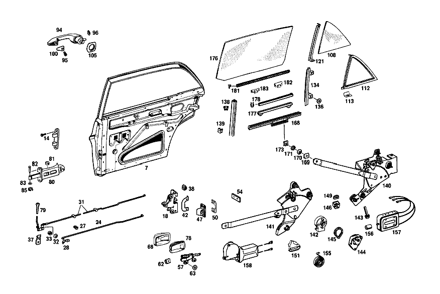

| № | Артикул | Название | Кол. | Примечание | Ограничение |
|---|---|---|---|---|---|
| 7 | A 109 730 04 05 | ОСТОВ ДВЕРИ | - | ||
| 14 | A 108 990 01 22 | болт | 8 | ||
| 18 | A 115 730 02 35 | ЗАМОК ДВЕРИ | 1 | [044] 016 UP TO CHASSIS 000881; 018 UP TO CHASSIS 000201 | |
| 24 | A 108 730 05 92 | ПРИВОДНАЯ ШТАНГА | - | [002] 015 FROM CHASSIS 002131 [052] 018 UP TO CHASSIS 005928; 056 UP TO CHASSIS 007415; 057 UP TO CHASSIS 000159 | |
| 27 | A 002 988 83 78 | Скоба | - | ||
| 27 | A 006 988 63 78 | Скоба | 4 | ||
| 28 | A 100 994 01 60 | предохранитель | 2 | ||
| 31 | A 109 730 06 93 | ПРЕДОХР. БЛОКИР. ДВЕРИ | 1 | СПРАВА | |
| 32 | N 900055 008002 | - Пружинная шайба | 2 | ||
| 33 | A 120 991 04 35 | - ДИСТАНЦИОННОЕ КОЛЬЦО | 2 | ||
| 37 | A 000 990 39 91 | CAGE NUT | 2 | ||
| 38 | A 000 990 41 91 | ГАЙКОДЕРЖАТЕЛЬ | - | [401] ИСПОЛЬЗОВАТЬ СТАРЫЙ НОМЕР ДЕТАЛИ [053] 018 UP TO CHASSIS 005094; 056 UP TO CHASSIS 003142 | |
| 42 | A 108 723 02 24 | ОБРАМЛЕНИЕ | 1 | СПРАВА | |
| 47 | A 115 720 06 04 | Скоба замка | 1 | [020] 016 UP TO CHASSIS 000861; 018 UP TO CHASSIS 002048 | |
| 50 | A 100 723 03 11 | ПЛАСТИНА | NB | [020] 016 UP TO CHASSIS 000861; 018 UP TO CHASSIS 002048 | |
| 54 | A 115 637 00 11 | ПЛАСТИНА | 4 | ||
| 57 | A 108 760 06 61 | Управление | 1 | СПРАВА [022] 016 UP TO CHASSIS 001292; 018 UP TO CHASSIS 000934 | |
| 62 | A 000 990 83 91 | ГАЙКОДЕРЖАТЕЛЬ | - | ||
| 62 | A 000 990 71 91 | Гайкодержатель | 4 | [415] ПРИМЕЧ. ПО ЗАМЕНЕ ПРИМЕНИМО ТОЛЬКО ДЛЯ СТОЯЩИХ РЯДОМ ПОЗИЦИЙ | |
| 63 | A 000 994 05 10 | Диск | 4 | ||
| 68 | A 108 766 06 11 | Ковшовая платформа | 1 | ||
| 78 | A 108 766 04 90 | Вставка | 1 | ||
| 79 | A 110 760 05 65 | ПРЕДОХРАНИТЕЛЬНАЯ ГОЛОВКА | 2 | ||
| 80 | A 108 730 00 16 | DOOR CHECK | 2 | ||
| 81 | A 000 984 07 58 | - РОЛИК | - | ||
| 81 | A 314 723 00 68 | - Ролик | 4 | СНАРУЖИ | |
| 82 | A 108 991 00 07 | Палец | 2 | ||
| 83 | A 108 990 01 40 | Диск | NB | ||
| 85 | N 912001 006001 | Механический фиксатор | 2 | ||
| 94 | A 108 760 08 59 | РУЧКА ДВЕРИ | 1 | СНАРУЖИ СПРАВА [002] 015 FROM CHASSIS 002131 | |
| 95 | A 120 766 00 15 | - БОЛТ | 2 | ||
| 96 | A 111 993 00 26 | ПРУЖИНА ДИСКОВАЯ | 2 | ||
| 100 | A 108 766 10 05 | ПОДКЛАДКА | 2 | ЛЕВЫЙ И ПРАВЫЙ [002] 015 FROM CHASSIS 002131 | |
| 105 | A 108 766 12 05 | ПОДКЛАДКА | 1 | СПРАВА [002] 015 FROM CHASSIS 002131 | |
| 108 | A 108 735 02 09 | Стекло | 1 | СПРАВА | |
| 112 | A 108 735 04 24 | УПЛОТНИТЕЛЬ | 1 | СПРАВА | |
| 121 | A 108 730 04 19 | ПОПЕРЕЧИНА ОКНА | 1 | [032] UP TO CHASSIS 003176 | |
| 134 | A 109 730 02 15 | FE. САЛАЗКИ | 1 | СПРАВА | |
| 136 | A 000 994 05 10 | Диск | 4 | ||
| 138 | A 000 985 29 30 | Направляющая | NB | 2270 MM [051] ЗАКАЗЫВАТЬ ПОГОННЫМИ МЕТРАМИ | |
| 139 | A 002 988 23 78 | Скоба | 12 | ||
| 140 | A 109 730 06 46 | СТЕКЛОПОДЪЕМНИК | 1 | СПРАВА [025] 016 UP TO CHASSIS 001858 EXCEPT FOR, SEE FOOTNOTE 55; 018 UP TO CHASSIS 002019 EXCEPT FOR, SEE FOOTNOTE 56 [055] 001473, 001548, 001722, 001786, 001793, 001797, 001801, 001804, 001853- 001857, 001702. [056] 001907, 001911. | |
| 141 | A 109 730 10 46 | СТЕКЛОПОДЪЕМНИК | 1 | СПРАВА [026] 016 FROM CHASSIS 001859 ALSO INSTALLED ON, SEE FOOTNOTE 55; 018 FROM CHASSIS 002020 ALSO INSTALLED ON, SEE FOOTNOTE 56 [055] 001473, 001548, 001722, 001786, 001793, 001797, 001801, 001804, 001853- 001857, 001702. [056] 001907, 001911. | |
| 142 | A 000 820 29 07 | - КОРОБКА ПЕРЕДАЧ | 2 | [025] 016 UP TO CHASSIS 001858 EXCEPT FOR, SEE FOOTNOTE 55; 018 UP TO CHASSIS 002019 EXCEPT FOR, SEE FOOTNOTE 56 [055] 001473, 001548, 001722, 001786, 001793, 001797, 001801, 001804, 001853- 001857, 001702. [056] 001907, 001911. | |
| 143 | A 000 990 29 22 | - БОЛТ | 6 | [402] БОЛЬШЕ НЕ ПОСТАВЛЯЕТСЯ [025] 016 UP TO CHASSIS 001858 EXCEPT FOR, SEE FOOTNOTE 55; 018 UP TO CHASSIS 002019 EXCEPT FOR, SEE FOOTNOTE 56 [055] 001473, 001548, 001722, 001786, 001793, 001797, 001801, 001804, 001853- 001857, 001702. [056] 001907, 001911. | |
| 144 | A 000 820 31 07 | - КОРОБКА ПЕРЕДАЧ | 2 | [025] 016 UP TO CHASSIS 001858 EXCEPT FOR, SEE FOOTNOTE 55; 018 UP TO CHASSIS 002019 EXCEPT FOR, SEE FOOTNOTE 56 [055] 001473, 001548, 001722, 001786, 001793, 001797, 001801, 001804, 001853- 001857, 001702. [056] 001907, 001911. | |
| 145 | A 000 824 13 98 | - УПЛОТНИТЕЛЬ | 2 | [025] 016 UP TO CHASSIS 001858 EXCEPT FOR, SEE FOOTNOTE 55; 018 UP TO CHASSIS 002019 EXCEPT FOR, SEE FOOTNOTE 56 [055] 001473, 001548, 001722, 001786, 001793, 001797, 001801, 001804, 001853- 001857, 001702. [056] 001907, 001911. [010] 015 FROM CHASSIS 001362 | |
| 146 | A 000 768 03 75 | - УПОР | 1 | СЛЕВА [025] 016 UP TO CHASSIS 001858 EXCEPT FOR, SEE FOOTNOTE 55; 018 UP TO CHASSIS 002019 EXCEPT FOR, SEE FOOTNOTE 56 [055] 001473, 001548, 001722, 001786, 001793, 001797, 001801, 001804, 001853- 001857, 001702. [056] 001907, 001911. | |
| 149 | A 000 768 01 75 | - УПОР | 2 | [025] 016 UP TO CHASSIS 001858 EXCEPT FOR, SEE FOOTNOTE 55; 018 UP TO CHASSIS 002019 EXCEPT FOR, SEE FOOTNOTE 56 [055] 001473, 001548, 001722, 001786, 001793, 001797, 001801, 001804, 001853- 001857, 001702. [056] 001907, 001911. | |
| 151 | A 000 768 09 75 | - Корпус | 1 | СЛЕВА [039] 016 FROM CHASSIS 002395; 018 FROM CHASSIS 003145; 056 FROM CHASSIS 000022 | |
| 155 | A 000 768 05 05 | - ПРУЖИНА | 2 | ||
| 156 | A 000 821 02 26 | Сцепление, механическое | 2 | [025] 016 UP TO CHASSIS 001858 EXCEPT FOR, SEE FOOTNOTE 55; 018 UP TO CHASSIS 002019 EXCEPT FOR, SEE FOOTNOTE 56 [055] 001473, 001548, 001722, 001786, 001793, 001797, 001801, 001804, 001853- 001857, 001702. [056] 001907, 001911. | |
| 157 | A 000 820 11 42 | ЭЛЕКТРОМОТОР | 2 | [025] 016 UP TO CHASSIS 001858 EXCEPT FOR, SEE FOOTNOTE 55; 018 UP TO CHASSIS 002019 EXCEPT FOR, SEE FOOTNOTE 56 [055] 001473, 001548, 001722, 001786, 001793, 001797, 001801, 001804, 001853- 001857, 001702. [056] 001907, 001911. | |
| 158 | A 001 820 05 42 | Электродвигатель | 1 | СЛЕВА [026] 016 FROM CHASSIS 001859 ALSO INSTALLED ON, SEE FOOTNOTE 55; 018 FROM CHASSIS 002020 ALSO INSTALLED ON, SEE FOOTNOTE 56 [055] 001473, 001548, 001722, 001786, 001793, 001797, 001801, 001804, 001853- 001857, 001702. [056] 001907, 001911. | |
| 168 | A 109 730 06 45 | FE.ПОДЪЕМНАЯ ПЛАНКА | 1 | СПРАВА | |
| 169 | A 113 984 00 37 | ПОЛЗУН | - | ||
| 170 | A 000 984 24 56 | Диск | - | ||
| 171 | A 000 990 05 48 | Диск | - | ||
| 173 | A 115 586 00 72 | РЕМКОМПЛЕКТ | - | ||
| 173 | A 123 720 01 14 | Ремк-т стеклоподъемника | 1 | СТЕКЛОПОДЪЕМНИК | |
| 176 | A 109 735 02 10 | ЗАЩИТНОЕ СТЕКЛО | 1 | ПОДВИЖН. СТЕКЛО СПРАВА | |
| 177 | A 112 730 00 47 | КРЕПЕЖНАЯ ПЛАНКА | 2 | ||
| 178 | A 001 987 42 57 | Уплотнитель стекла | NB | 440 MM [404] ЗАКАЗЫВАТЬ ПОГОННЫМИ МЕТРАМИ [051] ЗАКАЗЫВАТЬ ПОГОННЫМИ МЕТРАМИ | |
| 181 | A 121 725 01 66 | УПЛОТНИТЕЛЬ | 1 | ||
| 182 | A 108 988 03 78 | Скоба | 8 | ||
| 183 | A 108 988 02 78 | СКОБА | - | ||
| 185 | A 109 730 20 51 | Обшивка | 1 | СПЕРЕДИ СПРАВА [013] ENCLOSE SAMPLE OF VENEER WHEN ORDERING | |
| 187 | A 000 985 09 62 | Диск | 4 | ||
| 188 | A 109 730 14 51 | Обшивка | 1 | СВЕРХУ СПРАВА [013] ENCLOSE SAMPLE OF VENEER WHEN ORDERING | |
| 193 | A 109 730 24 51 | Обшивка | 1 | СПРАВА [012] STATE COLOR AND CHASSIS NO. WHEN ORDERING | |
| 194 | A 108 725 00 70 | - Декоративное кольцо | 2 | ||
| 195 | A 001 988 28 78 | - СКОБА | - | ||
| 195 | A 002 988 45 78 | - Скоба | 8 | ||
| 196 | A 109 735 02 82 | МОЛДИНГ | 1 | СПРАВА [402] БОЛЬШЕ НЕ ПОСТАВЛЯЕТСЯ | |
| 197 | A 111 727 52 90 | ШУМОИЗОЛЯЦИЯ | - | ||
| 197 | A 123 727 00 90 | ШУМОИЗОЛЯЦИЯ | - | ||
| 197 | A 110 727 03 90 | Шумоизол. двери водителя | - | ||
| 197 | A 210 682 00 08 | Шумоизоляция двери | 2 | [409] ПРИ МОНТАЖЕ ПОДОГНАТЬ ПО МЕСТУ | |
| 199 | A 109 730 02 78 | УПЛОТНИТЕЛЬНАЯ РАМА | 1 | СПРАВА | |
| 203 | A 109 730 02 97 | ЗАЩИТА КРОМОК | - | [040] 016 UP TO CHASSIS 002499; 018 UP TO CHASSIS 003673; 056 UP TO CHASSIS 000158 | |
| 205 | A 108 737 04 31 | Уплотнение | 1 | ЦЕНТР. СТОЙКА СПРАВА | |
| 212 | A 109 730 44 70 | Обшивка | 1 | (VELOURS), RIGHT [026] 016 FROM CHASSIS 001859 ALSO INSTALLED ON, SEE FOOTNOTE 55; 018 FROM CHASSIS 002020 ALSO INSTALLED ON, SEE FOOTNOTE 56 [055] 001473, 001548, 001722, 001786, 001793, 001797, 001801, 001804, 001853- 001857, 001702. [056] 001907, 001911. | |
| 233 | A 002 988 45 78 | - Скоба | 12 | ||
| 237 | A 109 737 00 82 | - МОЛДИНГ | 2 | ||
| 238 | A 109 737 00 72 | - ПЛАНКА | - | ||
| 238 | A 110 737 00 72 | - ПЛАНКА | 2 | МОЛДИНГ | |
| 239 | A 000 994 22 45 | - ПРЕДОХРАНИТЕЛЬ | 32 | ||
| 240 | A 109 737 01 82 | - МОЛДИНГ | 2 | ||
| 241 | A 109 737 01 72 | - ПЛАНКА | - | ||
| 241 | A 109 727 01 72 | - ПЛАНКА | 2 | МОЛДИНГ | |
| 242 | A 109 730 02 22 | - МОЛДИНГ | 1 | СПРАВА [013] ENCLOSE SAMPLE OF VENEER WHEN ORDERING | |
| 244 | A 109 720 07 30 | РАМА | 2 | [012] STATE COLOR AND CHASSIS NO. WHEN ORDERING | |
| 246 | A 109 738 02 30 | МОЛДИНГ | 1 | КАНТ БОРТА СПРАВА | |
| 247 | A 108 728 02 97 | Промежуточная прокладка | 12 | ||
| 249 | A 115 988 06 78 | СКОБА | - | [042] 016 FROM CHASSIS 002517; 018 FROM CHASSIS 003769; 056 FROM CHASSIS 000396 [048] 018 UP TO CHASSIS 006160; 056 UP TO CHASSIS 008331; 057 UP TO CHASSIS 000693 | |
| 257 | A 109 730 16 80 | МОЛДИНГ | - | ||
| 257 | A 109 730 18 80 | Декоративный элемент | 1 | AT BEADED EDGE,RIGHT [029] 016 UP TO CHASSIS 000678; 018 UP TO CHASSIS 000073 | |
| 264 | A 109 730 06 85 | - ОКАНТОВКА | 1 | СПРАВА [029] 016 UP TO CHASSIS 000678; 018 UP TO CHASSIS 000073 | |
| 266 | A 000 988 43 81 | - Кнопка-застежка | 16 | ВЕРХ.ЧАСТЬ [029] 016 UP TO CHASSIS 000678; 018 UP TO CHASSIS 000073 | |
| 270 | A 109 738 04 97 | - ПОДКЛАДКА | 1 | СПРАВА [029] 016 UP TO CHASSIS 000678; 018 UP TO CHASSIS 000073 | |
| 271 | A 000 988 15 81 | Крепежная втулка | - | ||
| 271 | A 001 988 20 81 | КНОПКА НАЖИМНАЯ | - | ||
| 271 | A 008 997 03 81 | КАБ. ВТУЛКА | - | ||
| 271 | A 001 988 20 81 | КНОПКА НАЖИМНАЯ | - | ||
| 271 | A 001 988 76 81 | Кнопка-застежка | 16 | НИЖНЯЯ ДЕТАЛЬ | |
| 272 | A 109 730 06 30 | РАМА | 1 | СПРАВА | |
| 274 | A 108 738 01 80 | Уплотнение | 2 | ||
| 277 | A 108 738 02 31 | МОЛДИНГ | 1 | СПЕРЕДИ СПРАВА | |
| 282 | A 109 738 08 31 | МОЛДИНГ | 1 | СВЕРХУ СПРАВА | |
| A 109 730 03 05 | ОСТОВ ДВЕРИ | - | |||
| A 109 730 09 05 | ОСТОВ ДВЕРИ | - | [022] 016 UP TO CHASSIS 001292; 018 UP TO CHASSIS 000934 | ||
| A 109 730 11 05 | ОСТОВ ДВЕРИ | 1 | [034] FROM CHASSIS 003177 | ||
| A 109 730 10 05 | ОСТОВ ДВЕРИ | - | [022] 016 UP TO CHASSIS 001292; 018 UP TO CHASSIS 000934 | ||
| A 109 730 12 05 | ОСТОВ ДВЕРИ | 1 | [034] FROM CHASSIS 003177 | ||
| A 108 990 00 22 | БОЛТ | - | |||
| A 115 730 01 35 | ЗАМОК ДВЕРИ | 1 | [044] 016 UP TO CHASSIS 000881; 018 UP TO CHASSIS 000201 | ||
| A 115 730 17 35 | ЗАМОК ДВЕРИ | - | |||
| A 115 730 21 35 | ЗАМОК ДВЕРИ | 1 | LEFT, LESS DOOR INNER LOCK, с ADDITIONAL LOCKING MECHANISM [045] 016 FROM CHASSIS 000882; 018 FROM CHASSIS 000202 | ||
| A 115 730 18 35 | ЗАМОК ДВЕРИ | - | |||
| A 115 730 22 35 | ЗАМОК ДВЕРИ | 1 | RIGHT, LESS DOOR INNER LOCK, с ADDITIONAL LOCKING MECHANISM [045] 016 FROM CHASSIS 000882; 018 FROM CHASSIS 000202 | ||
| A 108 730 07 92 | ПРИВОДНАЯ ШТАНГА | 1 | СЛЕВА | ||
| A 108 730 05 92 | ПРИВОДНАЯ ШТАНГА | - | [002] 015 FROM CHASSIS 002131 [052] 018 UP TO CHASSIS 005928; 056 UP TO CHASSIS 007415; 057 UP TO CHASSIS 000159 | ||
| A 108 730 08 92 | ПРИВОДНАЯ ШТАНГА | 1 | СПРАВА | ||
| A 120 987 01 37 | ФИТИНГ | - | |||
| A 111 992 00 25 | ВТУЛКА | - | |||
| A 109 730 05 93 | ПРЕДОХР. БЛОКИР. ДВЕРИ | 1 | СЛЕВА | ||
| A 100 994 01 60 | предохранитель | 4 | |||
| N 000923 006005 | - Винт | 2 | |||
| A 120 987 01 37 | ФИТИНГ | - | |||
| A 111 992 00 25 | ВТУЛКА | - | |||
| A 002 988 83 78 | Скоба | - | |||
| A 006 988 63 78 | Скоба | 4 | |||
| A 000 990 83 91 | ГАЙКОДЕРЖАТЕЛЬ | - | |||
| A 000 990 71 91 | Гайкодержатель | 8 | [415] ПРИМЕЧ. ПО ЗАМЕНЕ ПРИМЕНИМО ТОЛЬКО ДЛЯ СТОЯЩИХ РЯДОМ ПОЗИЦИЙ | ||
| A 000 990 33 30 | Болт с потайной головкой | 4 | |||
| N 007988 006124 | БОЛТ | 4 | |||
| A 108 723 01 24 | Окаймление | 1 | СЛЕВА | ||
| N 007988 004103 | БОЛТ | 4 | |||
| A 115 720 05 04 | Скоба замка | 1 | [020] 016 UP TO CHASSIS 000861; 018 UP TO CHASSIS 002048 | ||
| A 115 720 05 04 | Скоба замка | 1 | СЛЕВА [021] 016 FROM CHASSIS 000862; 018 FROM CHASSIS 002049 | ||
| A 115 720 06 04 | Скоба замка | 1 | СПРАВА [021] 016 FROM CHASSIS 000862; 018 FROM CHASSIS 002049 | ||
| A 100 723 02 11 | Компенсационная пластина | NB | [020] 016 UP TO CHASSIS 000861; 018 UP TO CHASSIS 002048 | ||
| A 115 723 05 11 | ПЛАСТИНА | NB | [402] БОЛЬШЕ НЕ ПОСТАВЛЯЕТСЯ [021] 016 FROM CHASSIS 000862; 018 FROM CHASSIS 002049 | ||
| A 115 723 06 11 | Компенсационная пластина | NB | [021] 016 FROM CHASSIS 000862; 018 FROM CHASSIS 002049 | ||
| A 000 990 33 30 | Болт с потайной головкой | 8 | |||
| A 108 760 05 61 | Внутренняя ручка | 1 | СЛЕВА [022] 016 UP TO CHASSIS 001292; 018 UP TO CHASSIS 000934 | ||
| A 115 760 01 61 | РУЧКА ВНУТРЕННЯЯ | 1 | СЛЕВА [023] 016 FROM CHASSIS 001293; 018 FROM CHASSIS 000935 [046] 018 UP TO CHASSIS 005928; 056 UP TO CHASSIS 007415; 057 UP TO CHASSIS 000159 | ||
| A 115 760 05 61 | Внутренняя ручка | 1 | СЛЕВА [047] 018 FROM CHASSIS 005929; 056 FROM CHASSIS 007416; 057 FROM CHASSIS 000160 | ||
| A 115 760 02 61 | РУЧКА ВНУТРЕННЯЯ | 1 | СПРАВА [023] 016 FROM CHASSIS 001293; 018 FROM CHASSIS 000935 [046] 018 UP TO CHASSIS 005928; 056 UP TO CHASSIS 007415; 057 UP TO CHASSIS 000159 | ||
| A 115 760 06 61 | Управление | 1 | СПРАВА [047] 018 FROM CHASSIS 005929; 056 FROM CHASSIS 007416; 057 FROM CHASSIS 000160 | ||
| N 007985 006132 | Винт | 4 | [402] БОЛЬШЕ НЕ ПОСТАВЛЯЕТСЯ | ||
| A 000 990 41 91 | ГАЙКОДЕРЖАТЕЛЬ | - | |||
| A 100 994 01 60 | предохранитель | 2 | |||
| A 108 766 05 11 | Ковшовая платформа | 1 | |||
| A 115 766 00 98 | Уплотнение | 2 | [036] FROM CHASSIS 002581 | ||
| N 007987 004119 | БОЛТ | 2 | |||
| N 006797 004333 | Зубчатая шайба | 2 | |||
| A 108 766 03 90 | Вставка | 1 | |||
| A 108 990 02 40 | ШАЙБА | NB | |||
| A 000 994 05 51 | ПРЕДОХРАНИТЕЛЬ | - | |||
| N 000933 006026 | Винт | 4 | ДЕРЖАТЕЛЬ ДВЕРИ НА ЗАДН. ДВЕРИ; M6X15\-8.8 [402] БОЛЬШЕ НЕ ПОСТАВЛЯЕТСЯ | ||
| A 094 990 68 10 | Пружинное кольцо | 4 | ДЕРЖАТЕЛЬ ДВЕРИ НА ЗАДН. ДВЕРИ | ||
| N 009021 006103 | Шайба | - | |||
| N 009021 006208 | Шайба | 2 | ДЕРЖАТЕЛЬ ДВЕРИ НА ЗАДН. ДВЕРИ; 6 MM | ||
| N 006797 006145 | Зубчатая шайба | 2 | ДЕРЖАТЕЛЬ ДВЕРИ НА ЗАДН. ДВЕРИ | ||
| N 000934 006007 | Гайка | 2 | ДЕРЖАТЕЛЬ ДВЕРИ НА ЗАДН. ДВЕРИ | ||
| A 108 760 07 59 | РУЧКА ДВЕРИ | 1 | СНАРУЖИ СЛЕВА [002] 015 FROM CHASSIS 002131 | ||
| N 007985 006149 | Винт | - | |||
| N 007985 006580 | Винт | 2 | |||
| A 108 766 09 05 | ПОДКЛАДКА | - | [002] 015 FROM CHASSIS 002131 | ||
| A 108 766 11 05 | ПОДКЛАДКА | 1 | СЛЕВА [002] 015 FROM CHASSIS 002131 | ||
| A 108 735 01 09 | Стекло | 1 | СЛЕВА | ||
| A 108 735 03 09 | ЗАЩИТНОЕ СТЕКЛО | 1 | LEFT HEAT\-ABSORBING | ||
| A 108 735 04 09 | ЗАЩИТНОЕ СТЕКЛО | 1 | RIGHT HEAT\-ABSORBING | ||
| A 108 735 03 24 | УПЛОТНИТЕЛЬ | 1 | СЛЕВА | ||
| A 108 730 03 19 | ПОПЕРЕЧИНА ОКНА | 1 | [032] UP TO CHASSIS 003176 | ||
| A 108 730 07 19 | ПОПЕРЕЧИНА ОКНА | 1 | [034] FROM CHASSIS 003177 | ||
| A 108 730 08 19 | ПОПЕРЕЧИНА ОКНА | 1 | [034] FROM CHASSIS 003177 | ||
| N 007981 004243 | Шуруп | - | |||
| N 000000 002062 | Шуруп | 6 | |||
| N 009021 004108 | Шайба | - | |||
| A 094 990 63 08 | Шайба | 6 | |||
| A 108 725 01 98 | УПЛОТНИТЕЛЬ | - | |||
| A 000 989 45 85 | КЛЕЙКАЯ ЛЕНТА | - | |||
| A 002 989 41 85 | КЛЕЙКАЯ ЛЕНТА | NB | 15 X 650 MM WINDOW STAYBAR [037] 016 UP TO CHASSIS 001858 EXCEPT FOR, SEE FOOTNOTE 55; 018 UP TO CHASSIS 002019 EXCEPT FOR, SEE FOOTNOTE 56 [055] 001473, 001548, 001722, 001786, 001793, 001797, 001801, 001804, 001853- 001857, 001702. [056] 001907, 001911. | ||
| A 109 730 01 15 | FE. САЛАЗКИ | 1 | СЛЕВА | ||
| N 000933 006122 | Винт | - | |||
| N 304017 006034 | Винт с 6-гранной головкой | 2 | |||
| A 094 990 68 10 | Пружинное кольцо | 4 | |||
| N 000933 006084 | Винт | - | |||
| N 304017 006026 | Винт с 6-гранной головкой | 2 | M6X40 | ||
| A 000 985 20 30 | ПРОФИЛЬ ГЕРМЕТИЗИРУЮЩИЙ | - | |||
| A 108 725 00 98 | УПЛОТНИТЕЛЬ | - | |||
| A 115 725 12 98 | УПЛОТНИТЕЛЬ | - | |||
| A 116 725 01 98 | Уплотнение | 4 | TO SEAL THE CORNERS OF WINDOW RUNS | ||
| A 109 730 05 46 | СТЕКЛОПОДЪЕМНИК | 1 | СЛЕВА [025] 016 UP TO CHASSIS 001858 EXCEPT FOR, SEE FOOTNOTE 55; 018 UP TO CHASSIS 002019 EXCEPT FOR, SEE FOOTNOTE 56 [055] 001473, 001548, 001722, 001786, 001793, 001797, 001801, 001804, 001853- 001857, 001702. [056] 001907, 001911. | ||
| A 109 730 09 46 | СТЕКЛОПОДЪЕМНИК | 1 | СЛЕВА [026] 016 FROM CHASSIS 001859 ALSO INSTALLED ON, SEE FOOTNOTE 55; 018 FROM CHASSIS 002020 ALSO INSTALLED ON, SEE FOOTNOTE 56 [055] 001473, 001548, 001722, 001786, 001793, 001797, 001801, 001804, 001853- 001857, 001702. [056] 001907, 001911. | ||
| A 000 820 30 07 | - КОРОБКА ПЕРЕДАЧ | - | |||
| A 000 990 36 22 | - БОЛТ | - | |||
| N 914114 006006 | - Винт | 4 | [025] 016 UP TO CHASSIS 001858 EXCEPT FOR, SEE FOOTNOTE 55; 018 UP TO CHASSIS 002019 EXCEPT FOR, SEE FOOTNOTE 56 [055] 001473, 001548, 001722, 001786, 001793, 001797, 001801, 001804, 001853- 001857, 001702. [056] 001907, 001911. | ||
| A 000 768 04 75 | - УПОР | 1 | СПРАВА [025] 016 UP TO CHASSIS 001858 EXCEPT FOR, SEE FOOTNOTE 55; 018 UP TO CHASSIS 002019 EXCEPT FOR, SEE FOOTNOTE 56 [055] 001473, 001548, 001722, 001786, 001793, 001797, 001801, 001804, 001853- 001857, 001702. [056] 001907, 001911. | ||
| A 000 768 07 75 | - УПОР | 1 | СЛЕВА [026] 016 FROM CHASSIS 001859 ALSO INSTALLED ON, SEE FOOTNOTE 55; 018 FROM CHASSIS 002020 ALSO INSTALLED ON, SEE FOOTNOTE 56 [055] 001473, 001548, 001722, 001786, 001793, 001797, 001801, 001804, 001853- 001857, 001702. [056] 001907, 001911. | ||
| A 000 768 08 75 | - УПОР | 1 | СПРАВА [026] 016 FROM CHASSIS 001859 ALSO INSTALLED ON, SEE FOOTNOTE 55; 018 FROM CHASSIS 002020 ALSO INSTALLED ON, SEE FOOTNOTE 56 [055] 001473, 001548, 001722, 001786, 001793, 001797, 001801, 001804, 001853- 001857, 001702. [056] 001907, 001911. | ||
| A 000 768 05 75 | - КОРПУС | - | [026] 016 FROM CHASSIS 001859 ALSO INSTALLED ON, SEE FOOTNOTE 55; 018 FROM CHASSIS 002020 ALSO INSTALLED ON, SEE FOOTNOTE 56 [055] 001473, 001548, 001722, 001786, 001793, 001797, 001801, 001804, 001853- 001857, 001702. [056] 001907, 001911. [038] 016 UP TO CHASSIS 002394; 018 UP TO CHASSIS 003144; 056 UP TO CHASSIS 000021 | ||
| A 000 768 06 75 | - КОРПУС | - | [026] 016 FROM CHASSIS 001859 ALSO INSTALLED ON, SEE FOOTNOTE 55; 018 FROM CHASSIS 002020 ALSO INSTALLED ON, SEE FOOTNOTE 56 [055] 001473, 001548, 001722, 001786, 001793, 001797, 001801, 001804, 001853- 001857, 001702. [056] 001907, 001911. [038] 016 UP TO CHASSIS 002394; 018 UP TO CHASSIS 003144; 056 UP TO CHASSIS 000021 | ||
| A 000 768 10 75 | - КОРПУС | 1 | СПРАВА [039] 016 FROM CHASSIS 002395; 018 FROM CHASSIS 003145; 056 FROM CHASSIS 000022 | ||
| A 000 990 04 57 | - ГАЙКА | 2 | [039] 016 FROM CHASSIS 002395; 018 FROM CHASSIS 003145; 056 FROM CHASSIS 000022 | ||
| A 000 990 36 22 | - БОЛТ | - | |||
| N 914114 006006 | - Винт | 2 | [038] 016 UP TO CHASSIS 002394; 018 UP TO CHASSIS 003144; 056 UP TO CHASSIS 000021 | ||
| A 000 990 78 22 | - БОЛТ | 2 | [039] 016 FROM CHASSIS 002395; 018 FROM CHASSIS 003145; 056 FROM CHASSIS 000022 | ||
| A 000 820 10 42 | ЭЛЕКТРОМОТОР | - | |||
| A 000 824 21 75 | - УГОЛНЫЕ ЩЕТКИ К-Т | 4 | [025] 016 UP TO CHASSIS 001858 EXCEPT FOR, SEE FOOTNOTE 55; 018 UP TO CHASSIS 002019 EXCEPT FOR, SEE FOOTNOTE 56 [055] 001473, 001548, 001722, 001786, 001793, 001797, 001801, 001804, 001853- 001857, 001702. [056] 001907, 001911. | ||
| A 000 820 16 42 | ЭЛЕКТРОМОТОР | - | |||
| A 000 820 17 42 | ЭЛЕКТРОМОТОР | - | |||
| A 001 820 04 42 | Электродвигатель | 1 | СПРАВА [026] 016 FROM CHASSIS 001859 ALSO INSTALLED ON, SEE FOOTNOTE 55; 018 FROM CHASSIS 002020 ALSO INSTALLED ON, SEE FOOTNOTE 56 [055] 001473, 001548, 001722, 001786, 001793, 001797, 001801, 001804, 001853- 001857, 001702. [056] 001907, 001911. | ||
| A 000 990 36 22 | БОЛТ | - | |||
| N 914114 006006 | Винт | 6 | |||
| A 094 990 68 10 | Пружинное кольцо | 4 | |||
| N 000125 006407 | ШАЙБА | - | |||
| A 000 994 05 10 | Диск | 4 | |||
| N 000934 006007 | Гайка | 4 | |||
| A 109 730 05 45 | FE.ПОДЪЕМНАЯ ПЛАНКА | 1 | СЛЕВА | ||
| A 000 994 03 60 | ПРЕДОХРАНИТЕЛЬ | - | |||
| N 912002 010000 | Механический фиксатор | - | |||
| A 000 987 10 36 | резиновый профиль | - | |||
| A 000 987 07 72 | Защита кромок | NB | [404] ЗАКАЗЫВАТЬ ПОГОННЫМИ МЕТРАМИ [051] ЗАКАЗЫВАТЬ ПОГОННЫМИ МЕТРАМИ [027] 016 FROM CHASSIS 001118; 018 FROM CHASSIS 000611 | ||
| A 109 735 01 10 | ЗАЩИТНОЕ СТЕКЛО | 1 | ПОДВИЖН. СТЕКЛО СЛЕВА | ||
| A 109 735 03 10 | ЗАЩИТНОЕ СТЕКЛО | 1 | CRANK OPERATED WINDOW, LEFT HEAT\-ABSORBING | ||
| A 109 735 04 10 | ЗАЩИТНОЕ СТЕКЛО | 1 | CRANK OPERATED WINDOW, RIGHT HEAT\-ABSORBING | ||
| N 000933 006122 | Винт | - | |||
| N 304017 006034 | Винт с 6-гранной головкой | 4 | |||
| N 006797 006145 | Зубчатая шайба | 4 | |||
| A 115 988 00 78 | Скоба | 8 | |||
| A 109 730 19 51 | Обшивка | 1 | СПЕРЕДИ СЛЕВА [013] ENCLOSE SAMPLE OF VENEER WHEN ORDERING | ||
| N 007983 002314 | Шуруп | 2 | |||
| N 007983 002305 | Шуруп | 2 | |||
| A 109 730 13 51 | Обшивка | 1 | СВЕРХУ СЛЕВА [013] ENCLOSE SAMPLE OF VENEER WHEN ORDERING | ||
| N 007983 002303 | Шуруп | 14 | |||
| A 000 985 09 62 | Диск | 14 | |||
| A 109 730 23 51 | Обшивка | 1 | СЛЕВА [012] STATE COLOR AND CHASSIS NO. WHEN ORDERING | ||
| A 109 735 01 82 | МОЛДИНГ | 1 | СЛЕВА | ||
| N 007983 002219 | САМОРЕЗ | 12 | |||
| A 109 730 01 78 | УПЛОТНИТЕЛЬНАЯ РАМА | 1 | СЛЕВА | ||
| A 001 988 24 78 | Скоба | 8 | |||
| A 109 730 01 97 | ЗАЩИТА КРОМОК | - | [040] 016 UP TO CHASSIS 002499; 018 UP TO CHASSIS 003673; 056 UP TO CHASSIS 000158 | ||
| A 109 730 03 97 | ЗАЩИТА КРОМОК | 1 | СЛЕВА | ||
| A 109 730 04 97 | ЗАЩИТА КРОМОК | 1 | СПРАВА | ||
| A 108 737 03 31 | Уплотнение | 1 | ЦЕНТР. СТОЙКА СЛЕВА | ||
| A 109 730 33 70 | Обшивка | 1 | (VELOURS), LEFT [025] 016 UP TO CHASSIS 001858 EXCEPT FOR, SEE FOOTNOTE 55; 018 UP TO CHASSIS 002019 EXCEPT FOR, SEE FOOTNOTE 56 [055] 001473, 001548, 001722, 001786, 001793, 001797, 001801, 001804, 001853- 001857, 001702. [056] 001907, 001911. [013] ENCLOSE SAMPLE OF VENEER WHEN ORDERING [012] STATE COLOR AND CHASSIS NO. WHEN ORDERING | ||
| A 109 730 34 70 | Обшивка | 1 | (VELOURS), RIGHT [025] 016 UP TO CHASSIS 001858 EXCEPT FOR, SEE FOOTNOTE 55; 018 UP TO CHASSIS 002019 EXCEPT FOR, SEE FOOTNOTE 56 [055] 001473, 001548, 001722, 001786, 001793, 001797, 001801, 001804, 001853- 001857, 001702. [056] 001907, 001911. [013] ENCLOSE SAMPLE OF VENEER WHEN ORDERING [012] STATE COLOR AND CHASSIS NO. WHEN ORDERING | ||
| A 109 730 43 70 | Обшивка | 1 | (VELOURS), LEFT [026] 016 FROM CHASSIS 001859 ALSO INSTALLED ON, SEE FOOTNOTE 55; 018 FROM CHASSIS 002020 ALSO INSTALLED ON, SEE FOOTNOTE 56 [055] 001473, 001548, 001722, 001786, 001793, 001797, 001801, 001804, 001853- 001857, 001702. [056] 001907, 001911. | ||
| A 109 730 35 70 | Обшивка | 1 | (LEATHER), LEFT [037] 016 UP TO CHASSIS 001858 EXCEPT FOR, SEE FOOTNOTE 55; 018 UP TO CHASSIS 002019 EXCEPT FOR, SEE FOOTNOTE 56 [055] 001473, 001548, 001722, 001786, 001793, 001797, 001801, 001804, 001853- 001857, 001702. [056] 001907, 001911. [013] ENCLOSE SAMPLE OF VENEER WHEN ORDERING [012] STATE COLOR AND CHASSIS NO. WHEN ORDERING | ||
| A 109 730 36 70 | Обшивка | 1 | (LEATHER), RIGHT [037] 016 UP TO CHASSIS 001858 EXCEPT FOR, SEE FOOTNOTE 55; 018 UP TO CHASSIS 002019 EXCEPT FOR, SEE FOOTNOTE 56 [055] 001473, 001548, 001722, 001786, 001793, 001797, 001801, 001804, 001853- 001857, 001702. [056] 001907, 001911. [013] ENCLOSE SAMPLE OF VENEER WHEN ORDERING [012] STATE COLOR AND CHASSIS NO. WHEN ORDERING | ||
| A 109 730 39 70 | Обшивка | 1 | (LEATHER), LEFT [026] 016 FROM CHASSIS 001859 ALSO INSTALLED ON, SEE FOOTNOTE 55; 018 FROM CHASSIS 002020 ALSO INSTALLED ON, SEE FOOTNOTE 56 [055] 001473, 001548, 001722, 001786, 001793, 001797, 001801, 001804, 001853- 001857, 001702. [056] 001907, 001911. [013] ENCLOSE SAMPLE OF VENEER WHEN ORDERING [012] STATE COLOR AND CHASSIS NO. WHEN ORDERING | ||
| A 109 730 40 70 | Обшивка | 1 | (LEATHER), RIGHT [026] 016 FROM CHASSIS 001859 ALSO INSTALLED ON, SEE FOOTNOTE 55; 018 FROM CHASSIS 002020 ALSO INSTALLED ON, SEE FOOTNOTE 56 [055] 001473, 001548, 001722, 001786, 001793, 001797, 001801, 001804, 001853- 001857, 001702. [056] 001907, 001911. [013] ENCLOSE SAMPLE OF VENEER WHEN ORDERING [012] STATE COLOR AND CHASSIS NO. WHEN ORDERING | ||
| A 109 730 37 70 | Обшивка | 1 | (TARTAN), LEFT [037] 016 UP TO CHASSIS 001858 EXCEPT FOR, SEE FOOTNOTE 55; 018 UP TO CHASSIS 002019 EXCEPT FOR, SEE FOOTNOTE 56 [055] 001473, 001548, 001722, 001786, 001793, 001797, 001801, 001804, 001853- 001857, 001702. [056] 001907, 001911. [013] ENCLOSE SAMPLE OF VENEER WHEN ORDERING [012] STATE COLOR AND CHASSIS NO. WHEN ORDERING | ||
| A 109 730 38 70 | Обшивка | 1 | (TARTAN), RIGHT [037] 016 UP TO CHASSIS 001858 EXCEPT FOR, SEE FOOTNOTE 55; 018 UP TO CHASSIS 002019 EXCEPT FOR, SEE FOOTNOTE 56 [055] 001473, 001548, 001722, 001786, 001793, 001797, 001801, 001804, 001853- 001857, 001702. [056] 001907, 001911. [013] ENCLOSE SAMPLE OF VENEER WHEN ORDERING [012] STATE COLOR AND CHASSIS NO. WHEN ORDERING | ||
| A 109 730 41 70 | Обшивка | 1 | (TARTAN), LEFT [026] 016 FROM CHASSIS 001859 ALSO INSTALLED ON, SEE FOOTNOTE 55; 018 FROM CHASSIS 002020 ALSO INSTALLED ON, SEE FOOTNOTE 56 [055] 001473, 001548, 001722, 001786, 001793, 001797, 001801, 001804, 001853- 001857, 001702. [056] 001907, 001911. [013] ENCLOSE SAMPLE OF VENEER WHEN ORDERING [012] STATE COLOR AND CHASSIS NO. WHEN ORDERING | ||
| A 109 730 42 70 | Обшивка | 1 | (TARTAN), RIGHT [026] 016 FROM CHASSIS 001859 ALSO INSTALLED ON, SEE FOOTNOTE 55; 018 FROM CHASSIS 002020 ALSO INSTALLED ON, SEE FOOTNOTE 56 [055] 001473, 001548, 001722, 001786, 001793, 001797, 001801, 001804, 001853- 001857, 001702. [056] 001907, 001911. [013] ENCLOSE SAMPLE OF VENEER WHEN ORDERING [012] STATE COLOR AND CHASSIS NO. WHEN ORDERING | ||
| A 000 983 02 84 | - КОЖА | 2 | FRAME 250 X 180 MM [037] 016 UP TO CHASSIS 001858 EXCEPT FOR, SEE FOOTNOTE 55; 018 UP TO CHASSIS 002019 EXCEPT FOR, SEE FOOTNOTE 56 [055] 001473, 001548, 001722, 001786, 001793, 001797, 001801, 001804, 001853- 001857, 001702. [056] 001907, 001911. [051] ЗАКАЗЫВАТЬ ПОГОННЫМИ МЕТРАМИ [012] STATE COLOR AND CHASSIS NO. WHEN ORDERING | ||
| A 002 988 59 78 | - СКОБА | - | |||
| A 003 988 41 78 | - Клипса обшивки | 12 | |||
| A 109 730 01 22 | - МОЛДИНГ | 1 | СЛЕВА [013] ENCLOSE SAMPLE OF VENEER WHEN ORDERING | ||
| N 007982 002219 | - Шуруп | - | |||
| N 007982 002212 | - Шуруп | 4 | |||
| A 109 738 01 30 | Декоративный элемент | 1 | КАНТ БОРТА СЛЕВА | ||
| A 108 988 02 78 | СКОБА | - | |||
| A 115 988 00 78 | Скоба | 4 | [041] 016 UP TO CHASSIS 002516; 018 UP TO CHASSIS 003768; 056 UP TO CHASSIS 000395 | ||
| A 115 988 10 78 | Защита от проворота | 4 | [049] 000694 | ||
| A 109 730 01 80 | МОЛДИНГ | - | |||
| A 109 730 11 80 | МОЛДИНГ | - | |||
| A 109 730 13 80 | МОЛДИНГ | - | |||
| A 109 730 15 80 | МОЛДИНГ | - | |||
| A 109 730 17 80 | Декоративный элемент | 1 | AT BEADED EDGE,LEFT [029] 016 UP TO CHASSIS 000678; 018 UP TO CHASSIS 000073 | ||
| A 109 730 02 80 | МОЛДИНГ | - | |||
| A 109 730 12 80 | МОЛДИНГ | - | |||
| A 109 730 14 80 | МОЛДИНГ | - | |||
| A 109 730 17 80 | Декоративный элемент | 1 | AT BEADED EDGE,LEFT [030] 016 FROM CHASSIS 000679; 018 FROM CHASSIS 000074 | ||
| A 109 730 18 80 | Декоративный элемент | 1 | AT BEADED EDGE,RIGHT [030] 016 FROM CHASSIS 000679; 018 FROM CHASSIS 000074 | ||
| A 109 730 05 85 | - ОКАНТОВКА | 1 | СЛЕВА [029] 016 UP TO CHASSIS 000678; 018 UP TO CHASSIS 000073 | ||
| A 109 730 07 85 | - ОКАНТОВКА | - | |||
| A 109 730 17 80 | - Декоративный элемент | 1 | СЛЕВА [030] 016 FROM CHASSIS 000679; 018 FROM CHASSIS 000074 | ||
| A 109 730 08 85 | - ОКАНТОВКА | - | |||
| A 109 730 18 80 | - Декоративный элемент | 1 | СПРАВА [030] 016 FROM CHASSIS 000679; 018 FROM CHASSIS 000074 | ||
| A 000 988 60 81 | - Кнопка-застежка | 16 | ВЕРХ.ЧАСТЬ [030] 016 FROM CHASSIS 000679; 018 FROM CHASSIS 000074 | ||
| A 109 738 01 97 | - ПОДКЛАДКА | - | |||
| A 109 738 03 97 | - ПОДКЛАДКА | 1 | СЛЕВА [029] 016 UP TO CHASSIS 000678; 018 UP TO CHASSIS 000073 | ||
| A 109 738 02 97 | - ПОДКЛАДКА | - | |||
| A 109 730 05 30 | РАМА | 1 | СЛЕВА | ||
| N 007983 002200 | Шуруп | 12 | |||
| A 108 738 01 31 | МОЛДИНГ | 1 | СПЕРЕДИ СЛЕВА | ||
| N 007981 003254 | САМОРЕЗ | 4 | |||
| N 000433 004303 | Шайба | 4 | |||
| A 109 738 07 31 | МОЛДИНГ | 1 | СВЕРХУ СЛЕВА |
Позиций: 294 · подписано на схемах: 109 · колесо — плавный зум в курсор, перетаскивание — пан, двойной клик — зум, клик по артикулу — скопировать.